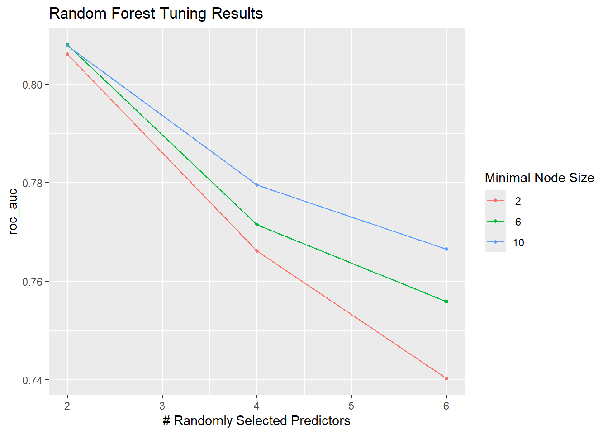

In this part, the goal is to create models for predicting the Diabetes_binary variable
Use log-loss as the metric the evaluate the models
For both classification tree and random forest model type, use log-loss with 5 fold cross-validation to select the best model, respectively.
Classification tree
A classification tree is a type of decision tree algorithm used for categorical response variables (in this example, Diabetes_binary)
The tree starts with a root node and then selects features that best splits the data into classes. At each node there will be a split, creating branches. Splitting stops when a criterion is met. Then at the leaf nodes, the class label is assigned based on the majority class of the training data in that node. To classify a new data point, the tree starts at the root node and follows the branches based on the feature values of the data point until it reaches a leaf node.
Rows: 253680 Columns: 22
── Column specification ────────────────────────────────────────────────────────
Delimiter: ","
dbl (22): Diabetes_binary, HighBP, HighChol, CholCheck, BMI, Smoker, Stroke,...
ℹ Use `spec()` to retrieve the full column specification for this data.
ℹ Specify the column types or set `show_col_types = FALSE` to quiet this message.
data1 <- data1 %>%mutate(HighBP =factor(HighBP, levels =c(0, 1), labels =c("No", "Yes")),HighChol =factor(HighChol, levels =c(0, 1), labels =c("No", "Yes")),Smoker =factor(Smoker, levels =c(0, 1), labels =c("No", "Yes")),Stroke =factor(Stroke, levels =c(0, 1), labels =c("No", "Yes")),HeartDiseaseorAttack =factor(HeartDiseaseorAttack, levels =c(0, 1), labels =c("No", "Yes")),PhysActivity =factor(PhysActivity, levels =c(0, 1), labels =c("No", "Yes")),Fruits =factor(Fruits, levels =c(0, 1), labels =c("No", "Yes")),HvyAlcoholConsump =factor(HvyAlcoholConsump, levels =c(0, 1), labels =c("No", "Yes")),GenHlth =factor(GenHlth, levels =c(1,2,3,4,5), labels =c("excellent", "very_good", "good", "fair", "poor")) )data1 <- data1 %>%mutate(Diabetes_binary =factor(Diabetes_binary, labels =c("No", "Yes")))# Set a seed for reproducibilityset.seed(123)# Split the data into training (70%) and test sets (30%)# resulting training set size: 177,575; resulting test set size: 76105# data_split <- initial_split(data %>% mutate(Diabetes_binary = factor(Diabetes_binary)), # prop = 0.7, # strata = Diabetes_binary)# # not working when rendering# data_split <- initial_split(# data = data %>% dplyr::mutate(Diabetes_binary = as.factor(Diabetes_binary)), # prop = 0.7, # strata = Diabetes_binary# )# Get row indices for training set# train_indices <- sample(seq_len(253680), size = floor(0.7 * 253680))# my_data <- data # # Split the data# # # training_data <- slice(data, train_indices)# # test_data <- slice(data, -train_indices)# # training_data <- my_data[train_indices, ] # 70% of the data# test_data <- my_data[-train_indices, ] # Remaining 30% of the data# test_data# data_split <- initial_split(data1, prop = 0.7, strata = Diabetes_binary)# training_data <- training(data_split)# test_data <- testing(data_split)# print(class(data1))total_rows <-253680train_indices <-sample(seq_len(total_rows), size =floor(0.7* total_rows))# Split using `data1`training_data <- data1[train_indices, ]test_data <- data1[-train_indices, ]test_data
# A tibble: 76,104 × 22
Diabetes_binary HighBP HighChol CholCheck BMI Smoker Stroke
<fct> <fct> <fct> <dbl> <dbl> <fct> <fct>
1 No No No 0 25 Yes No
2 No Yes No 1 27 No No
3 No Yes Yes 1 24 No No
4 No Yes Yes 1 25 Yes No
5 Yes Yes Yes 1 28 No No
6 No No Yes 1 33 Yes Yes
7 No Yes Yes 1 28 Yes No
8 No No No 1 32 No No
9 Yes Yes Yes 1 37 Yes Yes
10 Yes Yes Yes 1 28 Yes No
# ℹ 76,094 more rows
# ℹ 15 more variables: HeartDiseaseorAttack <fct>, PhysActivity <fct>,
# Fruits <fct>, Veggies <dbl>, HvyAlcoholConsump <fct>, AnyHealthcare <dbl>,
# NoDocbcCost <dbl>, GenHlth <fct>, MentHlth <dbl>, PhysHlth <dbl>,
# DiffWalk <dbl>, Sex <dbl>, Age <dbl>, Education <dbl>, Income <dbl>
# finally it worked. In Modeling.qmd, I need to do every step that I did in EDA.qmd. Environment of running quarto render is different from that in local PC
check the sizes of training and test sets
cat("Training set size:", nrow(training_data), "\n")cat("Test set size:", nrow(test_data), "\n")
Fit a classification tree with varying values for the complexity parameter
library(rpart)library(rpart.plot)library(tidymodels)training_data <- training_data %>%mutate(Diabetes_binary =as.factor(Diabetes_binary))# Set seed for reproducibilityset.seed(123)# Choose a smaller dataset without compromising the results (otherwise the execution time is too long)small_training_data <- training_data %>%slice_sample(prop =0.4)# Specify the classification tree model with 6 predictor variables: HighBP + HighChol + BMI + PhysActivity + HeartDiseaseorAttack + Agetree_recipe <-recipe(Diabetes_binary ~ HighBP + HighChol + BMI + PhysActivity + GenHlth + Age, data = small_training_data)# Define the classification tree model with tuning parameterstree_spec <-decision_tree(cost_complexity =tune(), # Parameter to tunetree_depth =tune(), # Parameter to tunemin_n =tune() # Parameter to tune) %>%set_mode("classification") %>%set_engine("rpart")# Create a workflowtree_workflow <-workflow() %>%add_recipe(tree_recipe) %>%add_model(tree_spec)# Create 5-fold cross-validation folds on the small datasetcv_folds <-vfold_cv(small_training_data, v =5, strata = Diabetes_binary)# Set up a grid of hyperparameters to tunegrid <-grid_regular(cost_complexity(),tree_depth(),min_n(),levels =3)# Tune the model using log-loss. This step takes long time to executeset.seed(123)tree_results <-tune_grid( tree_workflow,resamples = cv_folds,grid = grid,metrics =metric_set(mn_log_loss) # Use log-loss as the evaluation metric)# Select the best based on log-lossbest_params <-select_best(tree_results, metric ="mn_log_loss")# Finalize the workflow with the best parametersfinal_tree <-finalize_workflow(tree_workflow, best_params)# Train the final model on the training setfinal_tree_fit <-fit(final_tree, data = small_training_data)# Display the resultsautoplot(tree_results) +labs(title ="Log-Loss for Classification Tree")
# check the resulting model fittree_resultsfinal_treefinal_tree_fit
Random forest
A random forest is an ensemble machine learning algorithm that builds and combines multiple decision trees to improve accuracy and robustness.
It Creates many decision trees (often hundreds or thousands) from random subsets of the data (bootstrapping). At each split in a tree, only a random subset of predictors is considered. In our case, the previous step uses a classification tree model. And in this step, random forest uses majority voting where the class predicted most often by the trees is chosen.
Random forest improves over a Basic classification tree. It reduces overfitting (averaging the predictions of many trees), and can handle both categorical and numeric variables. Overall, it’s more reliable than a single classification tree.
# install.packages("ranger")library(ranger) # For random forest
Warning: package 'ranger' was built under R version 4.3.3
Fit a random forest model with varying values for the mtry parameter
The fitting is based on 5 fold CV on the training data.
Include 6 predictors in the model
set ‘trees’ = 100 and grid levels = 3 to reduce long execution time
set.seed(123)# Take a 10% of the training data to improve the efficiency of model fittingrf_training_data <- training_data %>%slice_sample(prop =0.1)# Specify the random forest modelrf_spec <-rand_forest(mtry =tune(), # Number of predictors to randomly select at each splittrees =100, # Number of trees in the forestmin_n =tune() # Minimum number of data points in a node) %>%set_mode("classification") %>%set_engine("ranger")# Create a recipe including 6 predictorsrf_recipe <-recipe(Diabetes_binary ~ HighBP + HighChol + BMI + PhysActivity + GenHlth + Age, data = rf_training_data)# Combine the model and recipe into a workflowrf_workflow <-workflow() %>%add_model(rf_spec) %>%add_recipe(rf_recipe)# Define 5-fold cross-validationrf_cv_folds <-vfold_cv(rf_training_data, v =5, strata = Diabetes_binary)# Define a grid of `mtry` and `min_n` valuesrf_grid <-grid_regular(mtry(range =c(2, 6)), # Test mtry values between 2 and 6min_n(range =c(2, 10)), # Test min_n values between 2 and 10levels =3# Use 3 levels for each parameter)# Tune the random forest modelset.seed(123)# this step takes long time to executerf_results <-tune_grid( rf_workflow,resamples = rf_cv_folds,grid = rf_grid,metrics =metric_set(roc_auc) # Use AUC-ROC as the evaluation metric)# Select the best parameters based on AUC-ROCrf_best_params <-select_best(rf_results, metric ="roc_auc")# Finalize the workflow with the best hyperparametersrf_final_workflow <-finalize_workflow(rf_workflow, rf_best_params)# Fit the final random forest model on the sampled training datarf_final_fit <-fit(rf_final_workflow, data = rf_training_data)# Plot the results of the tuningautoplot(rf_results) +labs(title ="Random Forest Tuning Results")

# Display the best parametersprint(rf_best_params)
Final model selection. Now I have two best models from classification tree and random forest. I fit both to the test set and compare the fitting.
library(yardstick)library(dplyr)# Select only the required columns from test_datatest_data <- test_data %>% dplyr::select(Diabetes_binary, HighBP, HighChol, BMI, PhysActivity, GenHlth, Age)
Generate predictions for the two best models using test set
Generate the evaluations and save them in metrics
# Generate predictions for the random forest modelrf_predictions <-predict(rf_final_fit, test_data, type ="prob") %>%bind_cols(test_data %>% dplyr::select(Diabetes_binary))# Generate predictions for the classification tree modeltree_predictions <-predict(final_tree_fit, test_data, type ="prob") %>%bind_cols(test_data %>% dplyr::select(Diabetes_binary))# Evaluate Random Forest on the test setrf_metrics <- rf_predictions %>%roc_auc(truth = Diabetes_binary, .pred_Yes) %>%bind_rows(accuracy(data = rf_predictions %>%bind_cols(predict(rf_final_fit, test_data, type ="class") %>%rename(.pred_class = .pred_class)),truth = Diabetes_binary,estimate = .pred_class ),mn_log_loss(rf_predictions, truth = Diabetes_binary, .pred_Yes) ) %>%mutate(Model ="Random Forest")# the following is to evaluate the classification tree on the test set# Add class predictions explicitly for accuracy calculationsclass_predictions <-predict(final_tree_fit, test_data, type ="class") %>%pull(.pred_class) # Extract as a vector# Evaluate the Classification Tree on the test settree_metrics <- tree_predictions %>%roc_auc(truth = Diabetes_binary, .pred_Yes) %>%bind_rows(accuracy(data = tree_predictions %>%mutate(.pred_class = class_predictions),truth = Diabetes_binary,estimate = .pred_class ),mn_log_loss(tree_predictions, truth = Diabetes_binary, .pred_Yes) ) %>%mutate(Model ="Classification Tree")
Comparison between the two best models.
Results show the key metrics (roc_auc, accuracy, mn_log_loss), and based on that, the classification tree is overall marginally better. Both model have low roc_auc, indicating that when given an instance, the models has poor predictive power, can assign it to either class. It seems that both models have high accuracy which is a sign of imbalanced dataset. mn_log_loss is not low for either model, where the classification tree slightly outperform the random forest on this metric.
# Combine and display resultscomparison_metrics <-bind_rows(rf_metrics, tree_metrics)# print("Comparison of Random Forest and Classification Tree Models on the Test Set:")comparison_metrics
# A tibble: 6 × 4
.metric .estimator .estimate Model
<chr> <chr> <dbl> <chr>
1 roc_auc binary 0.189 Random Forest
2 accuracy binary 0.864 Random Forest
3 mn_log_loss binary 2.48 Random Forest
4 roc_auc binary 0.205 Classification Tree
5 accuracy binary 0.860 Classification Tree
6 mn_log_loss binary 2.34 Classification Tree